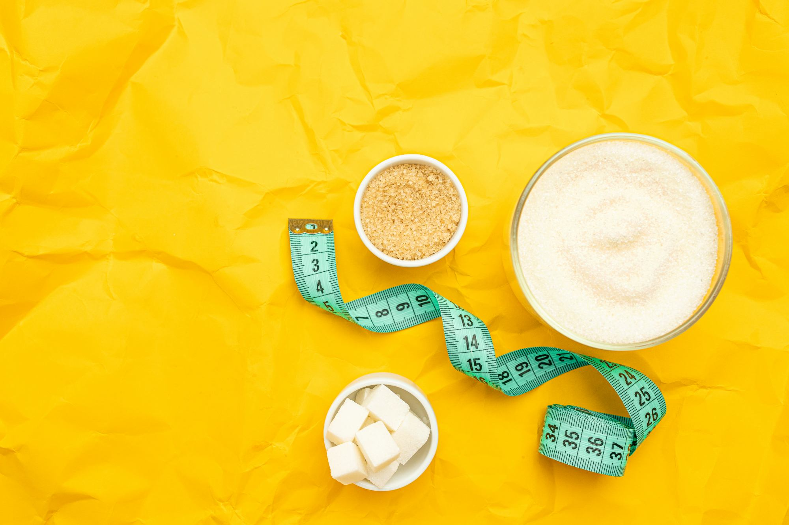

Types of diets:
1. Mediterranean Diet: This diet emphasizes whole foods, including fruits, vegetables,
whole grains, lean proteins (such as fish and poultry), and
healthy fats (such as olive oil). It limits processed foods, red
meat, and added sugars.
2. Keto Diet:
The ketogenic diet is a low-carb, high-fat diet that aims to put
the body into a state of ketosis, where it primarily burns fat for
energy. It restricts carbohydrates and promotes foods rich in fats
and moderate protein intake.
3. Paleo Diet:
The paleolithic diet focuses on foods presumed to have been
consumed by early humans, such as lean meats, fish, fruits,
vegetables, nuts, and seeds. It excludes grains, legumes, dairy
products, and processed foods.
4. Vegan Diet:
A vegan diet excludes all animal products and by-products,
including meat, fish, dairy, eggs, and honey. It mainly consists
of fruits, vegetables, legumes, grains, nuts, and seeds.
5. Atkins Diet:
The Atkins diet is a low-carb diet that promotes weight loss
through the restriction of carbohydrates. It consists of different
phases, starting with a very low-carb intake and gradually
increasing carbohydrate consumption.
6. DASH Diet:
The Dietary Approaches to Stop Hypertension (DASH) diet aims to
lower blood pressure and promote overall health. It emphasizes
fruits, vegetables, whole grains, lean proteins, and low-fat dairy
products while limiting sodium, saturated fats, and added
sugars.
7. Flexitarian Diet:
This flexible vegetarian diet encourages mostly plant-based foods
while allowing occasional consumption of meat and other animal
products.
8. Weight Watchers (WW): WW is a commercial weight loss program that assigns point values
to foods and promotes portion control and healthy eating
habits.
9. Intermittent Fasting:
Intermittent fasting involves cycling between periods of fasting
and eating. Popular methods include the 16/8 method (fasting for
16 hours and eating within an 8-hour window) or alternate-day
fasting.
It's important to note that before starting any diet,
consulting with a healthcare professional or a registered
dietitian is advisable to ensure it aligns with your specific
needs and health goals.